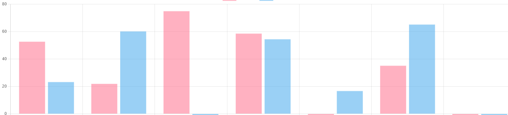

<mat-grid-list cols="4" rowHeight="100px">
  <mat-grid-tile colspan="4">

    <mat-card class="marging-10">
      <div class="search-form">
        <span mat-card-avatar class="material-icons vertical-center">search</span>
        <form class="search-full-width">
          <mat-form-field class="search-full-width">
            <input matInput type="text" placeholder="Search" />
            <mat-autocomplete #auto="matAutocomplete">
            </mat-autocomplete>
          </mat-form-field>
        </form>
        <button mat-raised-button color="primary">Cancel</button>
      </div>
    </mat-card>
  </mat-grid-tile>

  <mat-grid-tile colspan="2" rowspan="4" color="lightblue" class="marging-10">
    <mat-card class="marging-10">
      <mat-card-header>
        <h2>Related Devices</h2>
      </mat-card-header>
    </mat-card>

    <mat-card class="marging-10" *ngFor="let relatedDevice of relatedDevices; trackBy: trackItem ">
      <mat-card-header>
        <container-element [ngSwitch]="relatedDevice.type" class="full-width-inline">
          <div class="device-details">
            <span *ngSwitchCase="'IPhoneMobile'" mat-card-avatar class="material-icons vertical-center">smartphone</span>
            <span *ngSwitchCase="'IPhoneTablet'" mat-card-avatar class="material-icons vertical-center">tablet_mac</span>
            <span *ngSwitchCase="'Desktop'" mat-card-avatar class="material-icons vertical-center">desktop_windows</span>
            <span *ngSwitchCase="'Unknown'" mat-card-avatar class="material-icons vertical-center">device_unknown</span>

            <div class="device-text-details">
              <mat-card-title (click)="redirectToDeailsPage(relatedDevice)">{{relatedDevice.name}}</mat-card-title>
              <mat-card-subtitle>Status: {{relatedDevice.status}}</mat-card-subtitle>
            </div>
          </div>
          <span class="material-icons vertical-center">info</span>
        </container-element>
      </mat-card-header>
    </mat-card>
  </mat-grid-tile>

  <mat-grid-tile colspan="2" rowspan="4" class="marging-10">
    <mat-card class="marging-10" style="margin-left: 10px;">
      <mat-card-header>
        <h2>{{device?.name}}</h2>
      </mat-card-header>
      <mat-card-content>
        
      </mat-card-content>
    </mat-card>
  </mat-grid-tile>
</mat-grid-list>

<!-- Needed in case of details page refresh -->
<div *ngIf="!device">
  Device details not found. Please chose device from
  <a href="/">device list</a>.
</div>